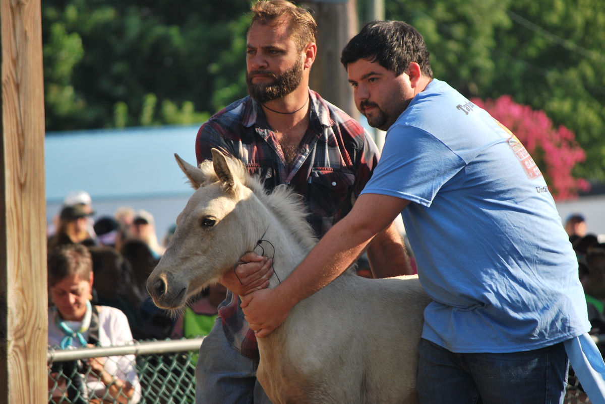
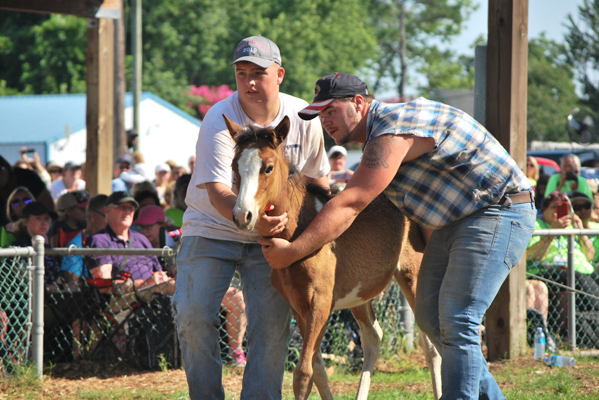

- Home
- Pony Swim Guide
- Pony Auction
The Pony Auction takes place the day after the Pony Swim, beginning at 8 am at back of Carnival Grounds.
The auction serves two purposes.
First, the auction helps to control the overall size of the herd, keeping it from growing too large. Each year about 60 foals are born on Assateague Island, VA. In order
to keep the overall herd at a sustainable size, most of the foals are sold at the auction. A few select foals are designated as 'buybacks'. A buyback pony is auctioned with
the stipulation that it will be donated back to the Fire Company and returned to Assateague Island to replenish the herd.
Secondly, the auction is a fundraiser for the Chincoteague Volunteer Fire Company. The Fire Company uses some of the proceeds from the auction to provide veterinary care for
the ponies through out the year.
Auction winners will receive a certificate saying that they purchased a Chincoteague Pony from the Chincoteague Volunteer Fire Company.

Tips for those Who plan to bid for a pony during the auction:
-
Be there early if you wish to bid on a pony. The crowds are huge and you will want a space as close to the front as possible.
-
Wear a sun hat and sunscreen. Bring plenty to drink.
-
A pencil and paper are always useful. A camera is nice. A folding chair is a good idea since the bleachers fill up quickly.
-
You do not have to register for the auction.
-
If you raise your hand during the auctioneer's chant, you ARE MAKING A BID.
-
Your transportation home for your new foal must be approved by the pony committee. (A horse trailer).
-
Ponies must be picked up by 5 pm Friday.
-
The only acceptable forms of payment are Visa, Mastercard, and CASH. The Fire Department will not accept checks!

Auction price history
- 2016 auction results: 57 ponies sold, average cost $2,659 , high bid $11,000, low bid $550, total sales $151,550.
- 2015 auction results: 61 ponies sold, average cost $2,779.94 (new record), high bid $25,000 (new record), low bid $500, total sales $169,576.
- 2014 auction results: 54 ponies sold, average cost $2,772.00 (new record), high bid $21,000 (new record), low bid $700, total sales $149,700.
- 2013 auction results: 55 ponies sold, average cost $2,000.00, high bid $12,000, low bid $650, total sales $113,975.
- 2012 auction results: 67 ponies sold, average cost $1,436.00, high bid $7,000, low bid $400, total sales $96,252.
- 2011 auction results: 69 ponies sold, average cost $1,442.00, high bid $6,700, low bid $450, total sales $99,500.
- 2010 auction results: 59 ponies sold, average cost $1,310.00, high bid $8,100, low bid $375, total sales $77,275.
- 2009 auction results: 70 ponies sold, average cost $1,344.29, high bid $11,700, low bid $500, total sales $94,100.
- 2008 auction results: 74 ponies sold, average cost $1,413.85, high bid $9,500, low bid $400, total sales $104,625.
- 2007 auction results: 73 ponies sold, average cost $2,442.47 (previous record), high bid $17,500 (previous record), low bid $700, total sales $178,300.00 (record).
- 2006 auction results: 78 ponies sold, average cost $2150.64, high bid of $7500, low bid of $350 (3 yr old). Total sales were $167,750.
- 2005 auction results: 66 ponies sold, average cost $2255.30, high bid of $8000.00, low bid of $900.00. Total sales were $148,850.00.
- 2004 auction results: 74 ponies sold, average cost $1618.24, high bid of $4000.00, low bid of $850.00. Total sales were $119,750.00.
- 2003 auction results: 71 ponies sold, average cost of $1798.59, high bid of $6,600.00, low bid of $1,000.00. Total sales were $127,700.00.
- 2002 auction results: 89 ponies sold, average cost of $1,818.00, high bid of $7,800.00, low bid of $950.00. Total sales were $161,800.00.
- 2001 auction results: 85 ponies sold, average cost of $1,961.00, high bid of $10,500.00, low bid of $1,000.00. Total sales were $166,725.00.
- 2000 auction results: 84 ponies sold, average cost of $2,060.00, high bid of $7,500.00, low bid of $1,300.00. Total sales were $173,085.00.
- 1999 auction results: 86 ponies sold, average cost of $1,620.00, high bid of $4,200.00, low bid of $800.00.